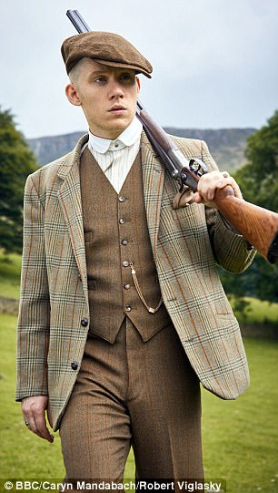

John Shelby
John Michael Shelby, también conocido como Johnny o John Boy, fue el tercero de los hermanos Shelby y un miembro de alto rango de los Peaky Blinders. También era accionista de 1/3 en el negocio de la familia Shelby, Shelby Company Limited. Era el esposo de Esme Shelby y por lo tanto estaba relacionado con la familia Lee a través del matrimonio. Después de que los Peaky Blinders se mezclan con la familia Changretta, John recibe la Mano Negra de ellos, pero tarda en reaccionar y no recibe una advertencia de su hermano Tommy, y es asesinado a tiros en su propiedad familiar.